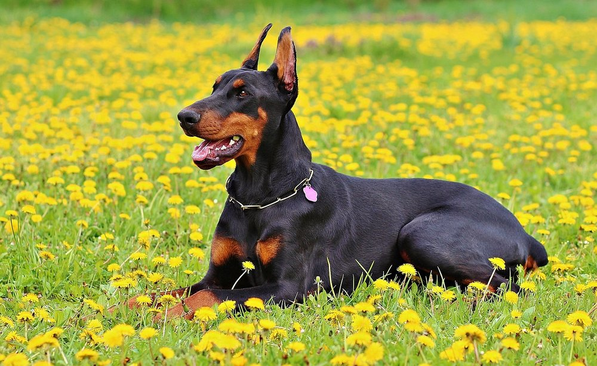
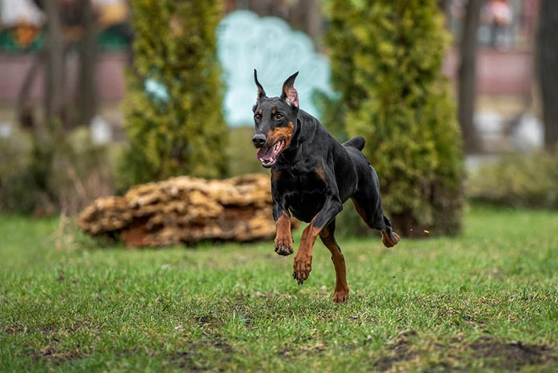
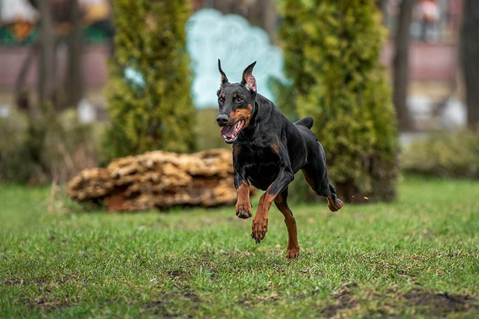
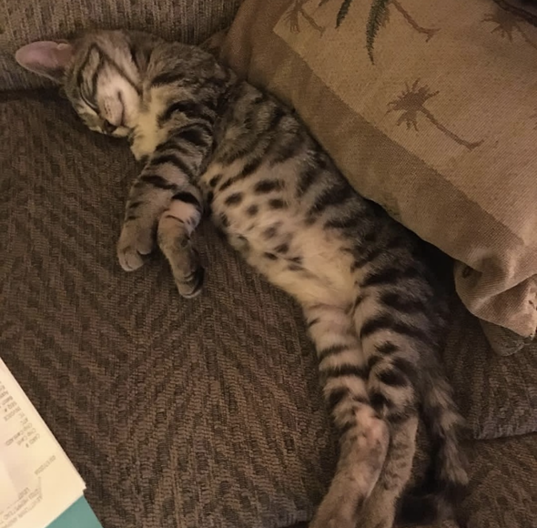
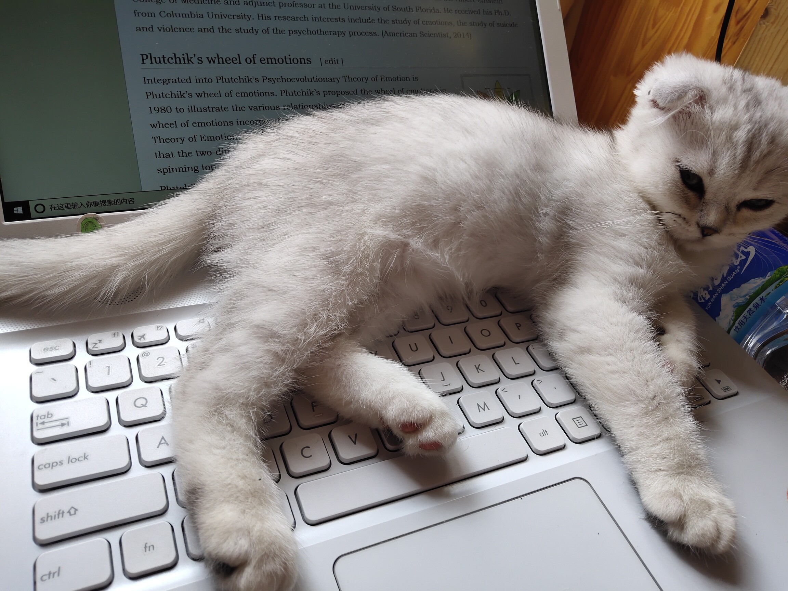
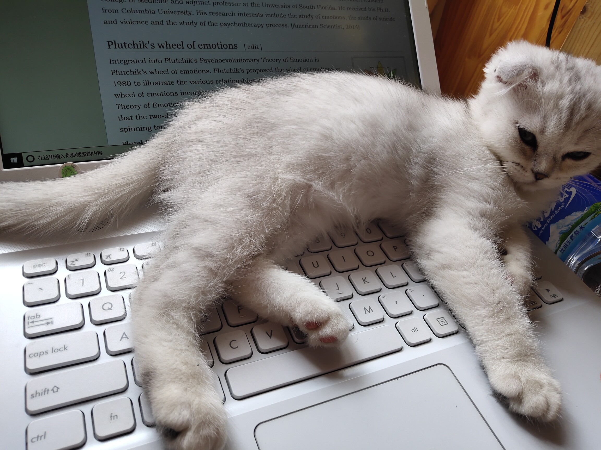

Bob

Bob is from Michigan. He loves to go on walks and visit the dog park.
He loves the beach and playing fetch. He is 4 years old and still acts
like a puppy at times.
Bob’s favorite food is steak. He likes medium rare. He will do tricks
for it, which includes rolling over. He also likes to chase squirrels
up trees and go for runs with his owner. Bob does not like cats and
his best friend is a Pitbull names john.
Photo Gallery

 


Likes
- Playing Fetch
- Swimming
- Chasing squirrels
Finn

Finn is a 7 year old grey cat. I feel like no one really knows cat
breeds so I’m just gonna go with grey. He loves doing tricks for
treats and his favorite is giving high fives to people. He might as
well be a dog as he loves the outdoors and meeting new people. I can
only describe him as goofy and chaotic.
Finn’s biggest enemy is his vet. I don’t know whether or not it’s
because his vet is an MSU alum, but he doesn’t like him. He actually
has to be prescribed a sedative before he goes to the vet office
because he’ll suddenly act like he was never a house cat for 7 years.
Photo Gallery



Likes
- Treats
- Head Rubs
- Sleeping in cardboard boxes
Biscuit

Biscuit is a 2 year old shiba inu dog. Shiba inus are energetic and
playful dogs. Biscuit enjoys running outside in circles and then
laying down in the grass in the sun for hours. He also likes going for
occasional swims.
As energetic as Biscuit is, he also likes to relax. He loves to sleep
in his dog bed and watch Netflix with his owners. His favorite treat
is apples.
Photo Gallery


Likes
- Going for walks
- Swimming
- Apples
Honey

Honey’s favorite thing in the world is swimming. Even if it is the
middle of January and half of the lake is frozen, Honey will be in the
water. She is a smart swimmer, so when my brother and I go underwater,
she will follow our air bubbles and be waiting for us when we come up
for air.
While most dogs like to chase balls or sticks, Honey likes to chase
rocks. She will even chase rocks into the water and stick her whole
face in the water to try and find the rock thrown. Chasing rocks is
her main form of exercise right now as she refuses to go on walks from
our house. If we drive her to another spot and walk from there, Honey
will go on a walk but she refuses to leave our driveway when we try to
walk from home. Finally one other Honey-ism is that her safe place is
bathtubs. Many times our family has woken up in the middle of the
night and found Honey is a bathtub.
Photo Gallery


Likes
Milktea

Milktea is a Scottish fold with a personality of a princess. She loves
her veggies and refuses to eat anything dropped on the ground. She
makes it clear when she has a demand of any sort by complaining in a
loud, distinguished manner. If what she says could be translated, it
probably would be, “This is atrocious, the water container has been
empty for the 3rd time this week. I want to see the manager.”
Despite her cuteness and royalty, she actually suffers from a genetic
disorder intentionally brought upon by humans. I highly advise against
keeping a Scottish fold because they are in constant pain when they
reach around 2 years old. Cartilage accumulates around her paw joints
and tail joints and it becomes painful for them to even walk. She is
living evidence of human’s cruelty of breeding animals to look pretty
while sacrificing the animals’ health.
Photo Gallery
 



Likes
- She loves individual corn kernels served on human hands
-
She enjoys sitting royally on suitcases to claim ownership of her
humans
-
She prefers to be alone and sit on soft surfaces in her free time